HISTORIQUE DU FAUBOURG SAINT –JACQUES
Longtemps avant l’occupation de Lutèce par les Romains, notre actuelle rue Saint-Jacques fut une artère très fréquentée par les voyageurs qui se rendaient du nord au sud de la Gaule. Plus tard la rue Saint –Jacques sera une voie romaine importante, solidement pavée avec de grosses dalles de pierre…Puis encore plus tard, elle sera la route que suivront les «Pèlerins de Saint-Jacques de Compostelle»…
Tout au long de la voie romaine de Saint-Jacques, existaient d’innombrables puits d’extraction de «Pierre à Bâtir». Une trentaine de ceux-ci étaient en activité vers le milieu du XVII siècle. Ces puits étaient visibles de très loin, car ils étaient surmontés par de grandes roues architecturées en bois, dont le diamètre était de l’ordre de huit mètres. Sous ces «Roues de Carrières» était installée une «Forme», sorte de plate-forme constituée de blocs de calcaire sur laquelle on déposait les «Pierres de Taille» en provenance des profondeurs. De là on les faisait glisser sur des «Fardiers», afin de les acheminer sur les lieux de construction. Ces grandes roues étaient actionnées par un ou deux hommes de la même manière que les écureuils gravitant dans leur cage. De par la démultiplication engendrée entre le diamètre extérieur de la roue et celui de l’axe du tambour, un homme de quatre-vingts kilogrammes pouvait à lui seul remonter une charge d’une tonne…Ce type de treuil sera utilisé du Moyen Âge jusqu’aux environs de 1870.
En 1813, deux décrets sont promulgués qui interdiront toute exploitation souterraine à Paris. En fait les extractions étaient depuis longtemps abandonnées par épuisement des bancs de pierre, rognés et sur rognés au cours des siècles…c’est vers la fin du XVII que les carriers abandonnèrent définitivement le site du faubourg Saint-Jacques.
Avant l’annexion de 1860, il fallait franchir la barrière Saint-Jacques pour se rendre sur notre actuelle rue de la Tombe-Issoire, territoire communal du Petit Montrouge. Cette route appelée au Moyen-Âge «Voie de Saint-Jacques» portera par la suite la désignation de «Chemin de Bourg-la-Reine», «Ancien chemin de Sceaux» et encore «Vieille route d’Orléans». Cette grande artère véhiculait toutes les pierres qui servaient à construire Paris en provenance du Grand-Montrouge, de Bagneux, d’Arcueil et de Châtillon.
Dans la première moitié du XIX siècle, les quartiers du «Petit-Montrouge» et de
«Montsouris» étaient très faiblement habités. Ces territoires étaient parsemés par des carrières, des champs de blé, des moulins, quelques jardins et des guinguettes fréquentées par les promeneurs parisiens et les carriers du voisinage. On y mangeait la galette et l’on buvait les petits vins en provenance de Bagneux et de Châtillon.
Au XVII siècle le faubourg Saint-Jacques n’était qu’une longue suite de couvents et d’établissements religieux où se retiraient de pieux solitaires, des courtisans dégoûtés de leur société, des dames de haute naissance qui n’avaient qu’à pleurer les erreurs de leur jeunesse. Dans le langage si noblement chrétien de ce siècle on appelait ce quartier la
«THÉBAÏDE DE PARIS». Ces lieux étaient couverts de grands enclos, perdus au milieu de nombreuses carrières, situés au-dessus de ces immenses souterrains appelés au XIX siècle
«CATACOMBES». Ce quartier n’était habité que par une population de carriers et de plâtriers, pauvres et pleins de foi.
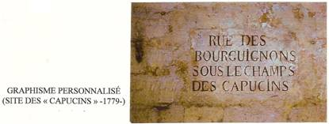
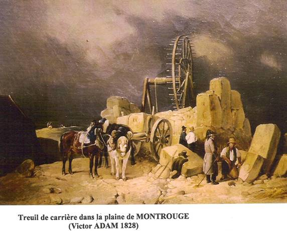
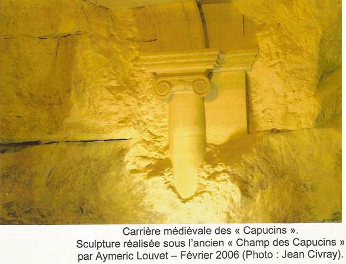
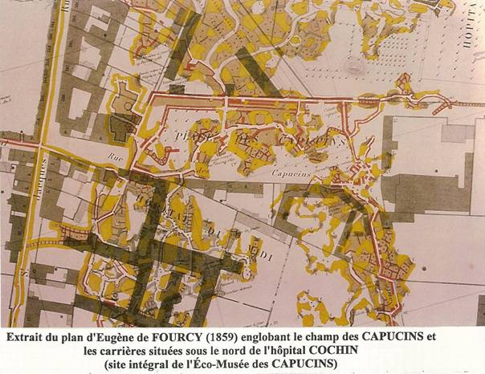
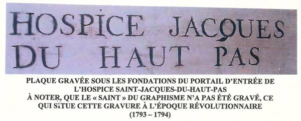
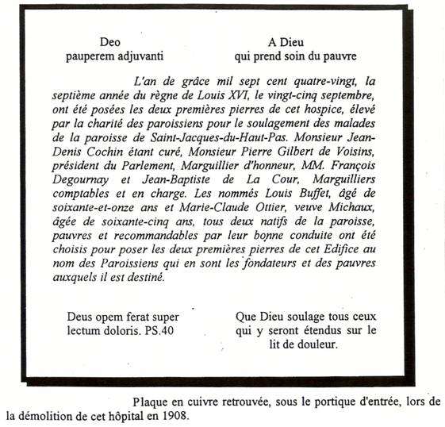
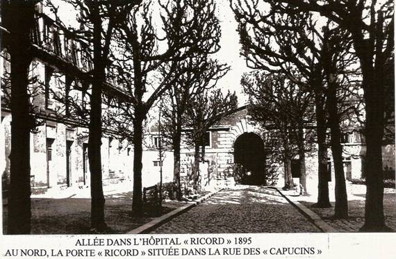
La première pierre de l’église actuelle de « Saint-Jacques-du-Haut-Pas » fut posée le 2 septembre 1630 par le duc d’Orléans, frère de Louis XIII, elle succédait à une chapelle qui datait de 1584, le quartier était pauvre, les travaux n’avancèrent que très lentement, les ouvriers travaillaient sans salaire un jour par semaine, les maîtres carriers donnèrent la pierre et le plâtre. L’achèvement de l’église, tour et portail, sera réalisé grâce à une illustre pénitente, la duchesse de LONGUEVILLE, qui vivait retirée dans un couvent du voisinage et qui apporta une aide très importante. La première pierre en provenance des carrières d’Arcueil fut placée par elle le 19 juillet 1675 ; de même elle fournira l’or et le marbre qui serviront à réaliser le sanctuaire. Il y avait entre les riches solitaires et les pauvres gens de ce faubourg une sollicitude, un respect mutuel et religieux.
Les différents corps de métier se faisaient un honneur de posséder parmi les saints, un protecteur particulier. Ils célébraient leurs fêtes avec la plus grande solennité. C’est ainsi que les chapelles de l’église « Saint-Jacques-du-Haut-Pas » leur seront concédées pour ces offices religieux. La chapelle de la nativité sera octroyée en 1637 aux « Tissutiers-Rubanniers», celle de « Saint-Denys», en 1640, aux « Maîtres Boulangers», celle de « Saint-Pierre-ès-Liens», en 1646, aux « Maîtres Savatiers». Les « Maîtres Carriers» pouvant jouir de cette même chapelle à condition de respecter les statues de « Saint Roch» et de « Saint Sébastien», tout en y plaçant celle de « Saint Jean» leur Saint Patron.
La sacristie de l’église sera reconstruite de 1722 à 1727, les « Maîtres Carriers» fourniront cette fois encore la pierre nécessaire à la construction de ce bâtiment.
En 1756, un curé prend ses fonctions dans la paroisse « Saint-Jacques-du-Haut-Pas», il a juste trente ans il s’appelle Jean-Denis COCHIN. Il exercera sa cure jusqu’à sa mort le 3 juin 1783.De santé précaire, il consacrera cependant toute son énergie et toute sa fortune pour les pauvres et les déshérités de sa paroisse, sa popularité, liée à sa bonté, lui valurent des dons qu’il investira pour ses œuvres charitables. À sa mort sa paroisse renfermait de huit mille à dix mille habitants, dont plus de la moitié était assistée par la charité ou exposée à lui demander des secours, lorsque la cessation de travail, la maladie ou l’invalidité lui enlevait le moyen de subsister. Ce grand nombre de « Pauvres Honteux» ainsi nommés en cette seconde moitié du XVIII siècle, comparé à la modicité de la cure qui n’excédait pas trois mille livres était effrayant, si, l’esprit de la piété et de la charité qui animait les quelques paroissiens fortunés ne leur inspirait pas des efforts généreux au profit de ces pauvres riverains.
Cette misère sera mise en exergue lors de l’assemblée générale des représentants de la commune du 20 février 1790, en effet on donna l’ordre aux trésoriers des différents districts de distribuer d’urgences des secours aux déshérités. Les districts du « Val-de-Grâce» et de
« Saint-Jacques-du-Haut-Pas» reçurent à eux seuls une allocation de 5300 livres, somme, trois fois plus importante que pour tous les autres districts réunis…
Le 16 mars 1780, l’abbé Denis Cochin fera l’acquisition de trois maisons entourées de vastes terrains situés sur l’ancien domaine des « Capucins». Avec un patrimoine des plus modeste, il fondera un hospice à l’usage des ouvriers carriers accidentés lors des travaux exécutés dans les immenses carrières souterraines du faubourg.
Dès la création de l’inspection des carrières en 1777, d’importants moyens seront mis en œuvre pour consolider le faubourg Saint-Jacques. La majorité de la population active de la paroisse « Saint-Jacques-du-Haut-Pas» se transforme en « maçon-carrier ». Le travail est pénible et dangereux, les anciennes exploitations étant en très mauvais état, elles génèrent d’importants accidents mortels. Journellement on remonte des blessés, les cas les plus graves devront êtres transférés à l’Hôtel-Dieu. Le manque de soins urgents, la lenteur d’acheminement de ces convois sanitaires, malgré un trajet d’à peine deux kilomètres, feront que de nombreux accidentés auront succombé à leur arrivée à l’hôpital, d’où la charitable nécessité ressentie par l’abbé Denis Cochin de créer, sur place, un hospice pour ces malheureux ouvriers.
Le 25 septembre 1780 , deux anciens carriers indigents, élus en assemblée de charité parmi les plus méritants de la paroisse, seront chargés de poser la première pierre de l’hospice « Saint-Jacques-du-Haut-Pas» en présence de l’abbé Cochin, des notables de la capitale de même que l’architecte chargé des plans et des travaux Charles François VIEL et de Pierre-Louis COMBAULT , entrepreneur, tous deux nés sur cette paroisse.
L’hospice « Saint -Jacques-du-Haut-Pas» sera inauguré le 27 juin 1782. Epuisé par son zèle charitable, le respectable abbé Cochin ne survivra qu’un an après la réalisation de son œuvre…123 ans après, l’hospice deviendra comme nous le verrons plus tard, l’hôpital
« COCHIN ».
Dans ce quartier où les carrières avaient séculairement occupé une place prépondérante, subsistait encore au début du XIX siècle de nombreux « Maîtres-Carriers » et, peut-être, simple coïncidence, l’inspection des carrières qui s’était installée dans l’enclos des Capucins dès leur départ, en 1783.
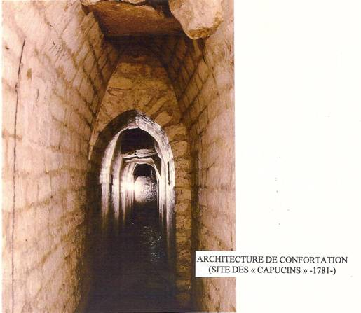
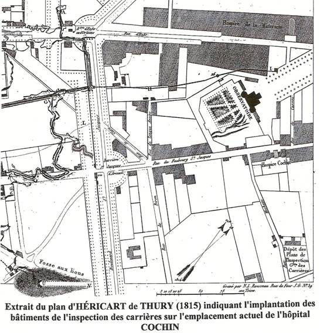
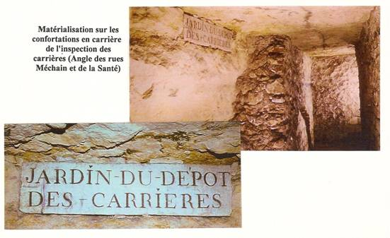
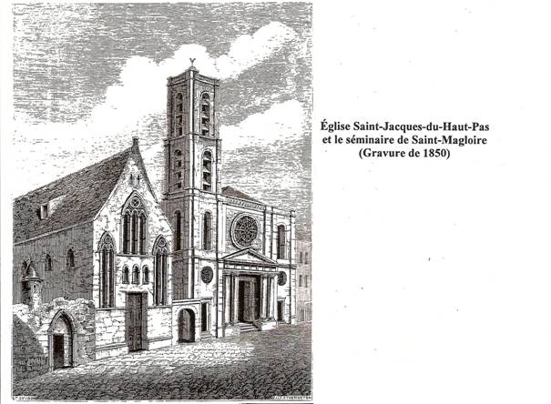
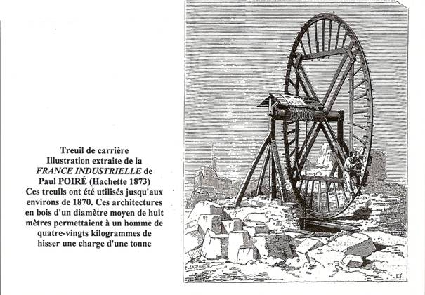
INSPECTION DES CARRIERES
Dépôt des plans de carrière 2 rue Méchain (les services de l’inspection étaient situés sur l’emplacement de notre actuel Hôpital Cochin, à l’angle des rues Méchain et de la Santé)
- Adresses des inspecteurs du service des carrières :
- HÉRICART DE THURY : 1, rue Sainte-Catherine.
- TRÉMERY : 1, quai Malaquais.
- CALY : 277, rue du faubourg Saint-Jacques.
- HUSSET : 2, rue Méchain.
- DELEPINE : 29, Champs des Capucins.
LES MAÎTRES CARRIERS DU FAUBOURG
Paris s’urbanisant, les maîtres carriers du faubourg Saint-Jacques expatrient progressivement leur activité au-delà de Paris, principalement vers le sud, tout en continuant à habiter cette paroisse, berceau privilégié depuis le XIII siècle de ces exploitations de « Pierre à bâtir ».
En 1815, on dénombrait encore dans ce quartier une trentaine de carriers qui demeuraient, rue d’enfer, au champ des Capucins, mais siégeaient principalement le long de la rue du faubourg Saint-Jacques. Pour les besoins de la construction de la cité, ils soumettaient, en priorité, la plaine de Châtillon à une intense activité industrielle comme nous l’indique encore l’annuaire « SAGERET ».
PRINCIPAUX EXPLOITANTS CARRIERS DU FAUBOURG SAINT-JACQUES EXERCANT LEURS ACTIVITES À CHATILLON EN 1815 :
La veuve BUISSONIERE , les frères CHAVASTELLE , les frères GANTHIER, les frères LESPINASSE, les frères NOUVIAL, les Sieurs CONDAMINAT, GAUTHIER, GIARD, GOUYEN, GOYEN, LAGORCE, LECOU, MALOUZE, MICHAU, PELEE, RADU.
Les Sieurs ARNOULT et COUSTEIX du faubourg Saint-Jacques exploitaient à Arcueil, Bagneux, Gentilly et Montrouge. De même certains carriers que nous devons d’énumérer possédaient plusieurs sites d’extraction dans les communes circonvoisines.
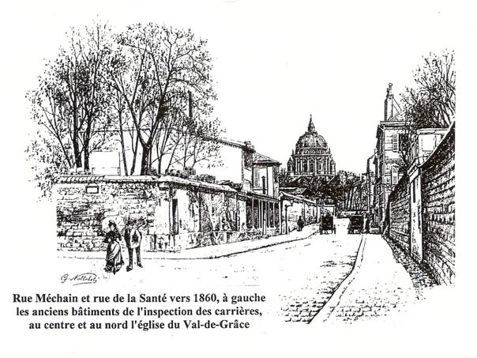
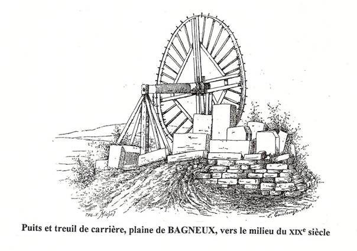
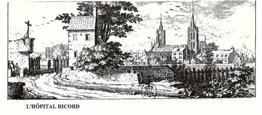
Le 17 septembre 1783, les « CAPUCINS » abandonnent leur noviciat du faubourg Saint-Jacques pour s’installer à la Chaussée-d’Antin au nouveau couvent de Saint-Louis.
Le marquis de BRETEUIL eut alors l’idée d’utiliser les vastes bâtiments disponibles pour y installer un hôpital d’intérêt général. Contrairement à certains établissements comme l’hospice Saint-Jacques-du-haut-Pas qui ne desservait que les habitants du quartier, celui-ci présentait un caractère d’utilité publique dont la gestion revenait de droit à l’administration de Louis XVI.
Ce nouvel hôpital avait pour objet de grouper tous les malades « attaqués du mal vénérien » qui étaient disséminés dans les hôpitaux de Bicêtre, Vaugirard, la Salpêtrière, l’Hôtel-Dieu et les Petites Maisons. Les vénériens, considérés comme indésirables, posaient de graves problèmes d’hospitalisation dans des chambres déjà surchargées. On considérait que les vénériens étaient atteints d’une maladie à caractère épidémique, transmissible par l’air, et redoutée à l’égal de la lèpre. On ne s’étonne pas des dispositions spéciales prises à l’égard de ces malades. Elles apparaissent comme une mesure de police, presque un nouveau motif de
« renfermement des pauvres » selon l’expression en cours à cette époque. CLAVAREAU n’écrivait-il pas « un hôpital de vénériens, tient plutôt aux établissements de police d’une grande ville qu’à ceux des secours de bienfaisance ».
Les missions que s’étaient fixées les concepteurs du projet n’aboutirent véritablement qu’à partir de 1802. Il fallut alors réaliser d’importants travaux d’agrandissements nécessités par l’afflux considérable des malades en provenance des hôpitaux précités. La chapelle des
« CAPUCINS » construite en1762 sera convertie en infirmerie.
À partir de 1808, les importantes innovations thérapeutiques apportées assureront une renommée à cet établissement. Un traitement interne et gratuit fonctionnait avec un plein succès puisqu’en moins de quatre ans on vit passer plus de cinq mille malades.
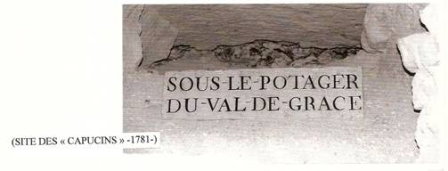
Après l’occupation des salles par les troupes prussiennes en1814, de nouvelles transformations et de nouveaux agrandissements seront réalisés dans cet ancien couvent.
À partir de 1836 on transfere les femmes dans un nouvel hôpital, de nos jours «BROCA», qui sera réservé aux maladies vénériennes du sexe faible.
Désormais l’hôpital vénérien affecté strictement aux hommes recevra une nouvelle dénomination : «HÔPITAL DU MIDI» ; à cette époque et jusqu’en 1868 , la porte que nous voyons aujourd’hui au 111 boulevard de Port-Royal (anciennement 59 rue des Capucins) s’ouvrait sur la petite rue des Capucins qui jouxtait une vaste place plantée de magnifiques arbres appelés « champ de capucins ».
En 1892, nouveau changement d’appellation : l’hôpital du Midi devient «L’HÔPITAL RICORD» pour honorer la mémoire du célèbre médecin qui se consacra à l’étude des maladies vénériennes.
Les pensionnaires ont laissé de curieuses statistiques : les années 1811,1812 et 1813 démontrent que les professions de cordonniers et tailleurs sont celles « qui fournirent à l’hôpital le plus de vénériens. En 1811, on y trouve en effet 161 cordonniers, 131 tailleurs, 59 menuisiers, 55 boulangers, 49 charpentiers, 25 tisserands, 11 vitriers, 10 coiffeurs-perruquiers, 5 porteurs d’eau. En 1812, 142 cordonniers, 100 tailleurs, 31 boulangers, 70 menuisiers, 9 perruquiers, 6 porteurs d’eau, 4 vitriers. En 1813, 171 cordonniers, 125 tailleurs, 58 menuisiers, 55 boulangers, 29 charpentiers, 12 porteurs d’eau, 9 garçons coiffeurs et 7 vitriers ». Les chroniqueurs de l’époque évoquaient sarcastiquement ces données qui montraient les dangers encourus par certains corps de métiers…
Du vieil hôpital du Midi il ne reste que la porte d’entrée, petit bâtiment couvert d’un toit à deux pentes, sur chaque face un fronton triangulaire montre une corniche interrompue au centre par le rayonnement des claveaux. Cette architecture a été réalisée par Eustache De SAINT-PHAR entre 1783 et 1784. LEDOUX n’a pas eu l’exclusivité de ces édifices massifs, puisque l’on retrouve ces mêmes types de construction au bâtiment d’entrée de la Salpêtrière
(par VIEL vers 1770) et surtout la FORCE, cube austère autour des trois cours.
Ce portail sera classé par les monuments historiques le 4 février 1942.
Lorsque cet hôpital fut englobé en 1905 dans l’enceinte de celui de « COCHIN ». On lui donna le nom de « COCHIN ANNEXE ».
Situé entre l’abbaye royale du « Val-de Grâce » au nord et le «Couvent des Capucins» au sud existait au XVII siècle un grand terrain vague que l’on dénommait «le Champ des Capucins». On y accédait par la rue des Capucins à l’ouest, la rue des Bourguignons à l’est et la rue de la Santé au sud. À l’extrémité est de ce champ, était érigée une croix de pierre, en forme de pyramide, que l’on appelait «La croix de la sainte hostie», en souvenir de son histoire. En 1668, trois voleurs pénétrèrent de nuit dans l’église de Saint-Martin, cloître de Saint-Marcel. Ils fracturèrent le tabernacle et dérobèrent le Saint Ciboire. Ils seront arrêtés et brûlés vifs, mais avant leur supplice, ils confessèrent avoir enveloppé une hostie dans un mouchoir et l’avoir jetée contre le mur de l’abbaye du «Val-de-Grâce». Après avoir effectivement trouvé l’hostie à cet endroit, et afin de réparer ce sacrilège, on organisa une procession générale où l’archevêque de Paris nu-pieds, déposa le saint sacrement sur un autel qui avait été dressé en ce lieu précis. C’est donc en mémoire de ce sacrilège, que cette croix fut édifiée et à laquelle on donna son nom.
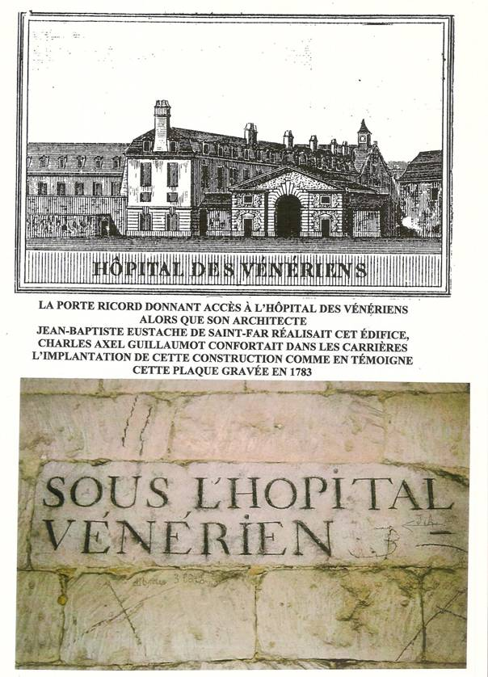
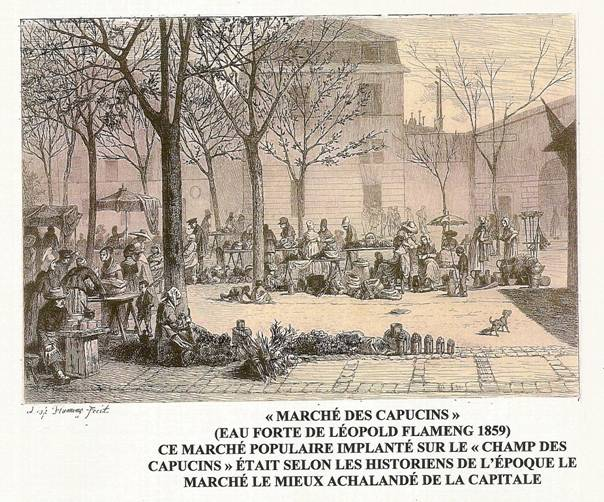
Durant plus d’un siècle, tous les ans, le premier dimanche de juillet, le curé et le clergé de Saint-Martin organisaient ici une procession du Saint Sacrement.
C’est également sur cette place, à coté du « Couvent des Capucins », que les soldats déserteurs de la garde française étaient passés par les armes.
Au cours de la première moitié du XIX siècle, « Léopold FLAMENG » décrit l’existence au « Champ des Capucins » d’un vaste marché populaire, coloré intensément par une clientèle laborieuse, et par un vaste échantillonnage de parisiens séduits par la variété et l’importance de son approvisionnement.
Un décret pour la création du boulevard de Port-Royal sera promulgué le 17 octobre 1857. Après avoir acquis les maisons qui se situaient dans le périmètre du projet, les services de la voirie réaliseront en 1867 et 1868 d’importants travaux de nivellement liés à la proximité de la vallée de la Bièvre. C’est ainsi que deux ponts seront construits à l’extrémité de la rue des Bourguignons au droit de la rue Lourcine et de la rue Pascal.
Suite à ces travaux, le puits de service monumental de la carrière des « Capucins », situé à l’angle de la rue de la Santé et de la rue des Capucins sera décapité de quatre-vingt-six centimètres, comme en témoigne le nivellement réalisé dans ce puits en 1841.
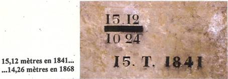
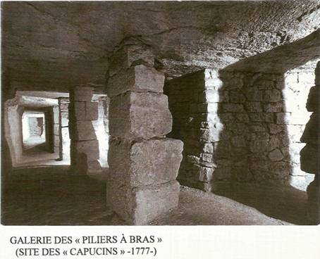
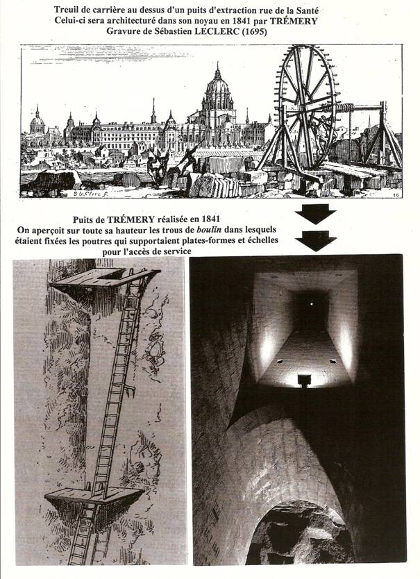
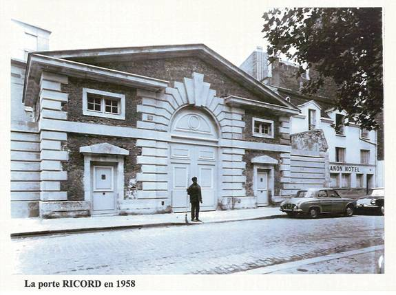
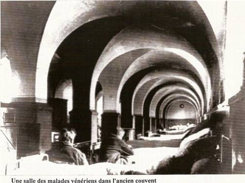
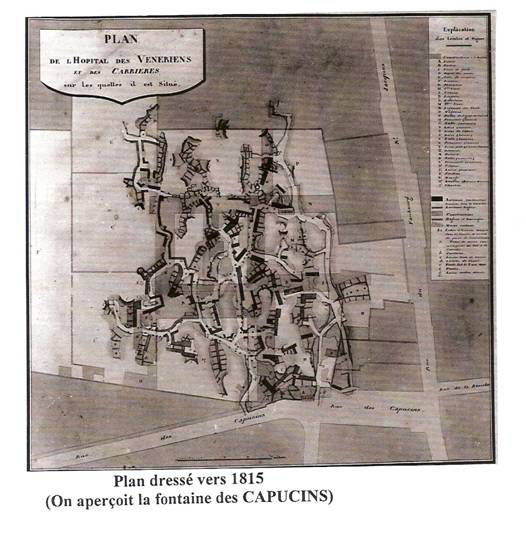
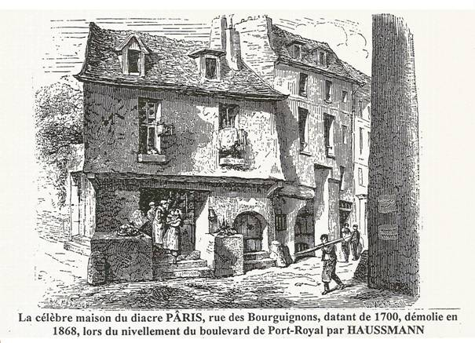
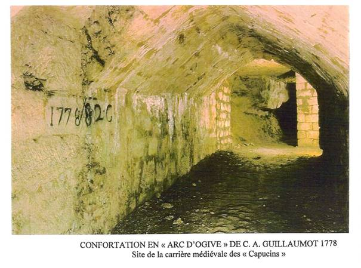